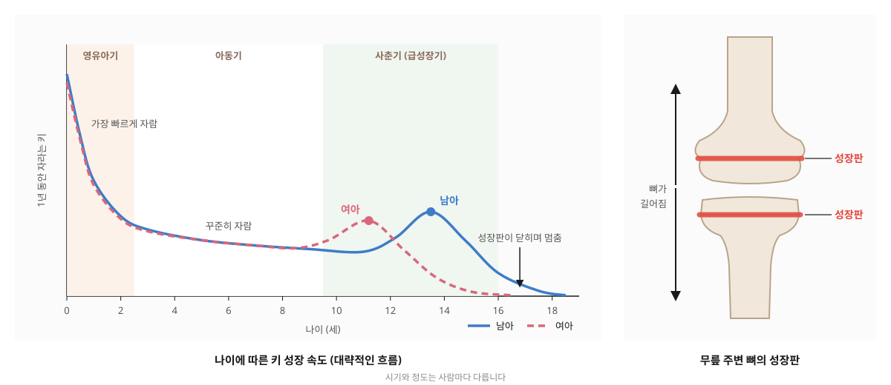

01
잦은 감기 · 비염
자주 아프고 코가 막혀 잠을 설치면, 성장에 써야 할 힘을 회복하는 데 쓰게 됩니다.
홈 > 소아·여성 > 소아 성장
아이가 가진 성장 가능성을 충분히 키울 수 있도록 돕습니다
GROWTH
키는 뼈 끝에 있는 성장판이 열려 있는 동안 자랍니다. 태어나서 두 돌 무렵까지 가장 빠르게 자라고, 이후 사춘기 전까지는 꾸준히 자라다가, 사춘기에 다시 한 번 빠르게 자란 뒤 성장판이 닫히면서 멈춥니다.
부모에게서 물려받은 키도 중요하지만, 영양과 수면, 운동, 스트레스, 자주 앓는 질환처럼 자라는 동안의 환경도 성장에 영향을 줍니다.
갈창림한의원은 아이의 성장을 방해하는 요인을 찾아 줄여, 성장 시기에 충분히 자랄 수 있도록 돕습니다.

FACTORS
01
자주 아프고 코가 막혀 잠을 설치면, 성장에 써야 할 힘을 회복하는 데 쓰게 됩니다.
02
잘 먹지 않거나 자주 체하고 배가 아프면 성장에 필요한 영양이 부족해지기 쉽습니다.
03
성장호르몬은 깊이 잠든 동안 많이 나옵니다. 늦게 자거나 자주 깨면 성장에 방해가 됩니다.
04
긴장과 스트레스가 이어지면 식욕과 잠이 흔들려 성장에도 영향을 줍니다.
05
뛰어노는 시간이 적으면 식욕과 잠에도 영향을 주고, 뼈와 근육이 튼튼해질 기회도 줄어듭니다.
06
체지방이 많으면 사춘기가 일찍 찾아와 자랄 수 있는 기간이 짧아질 수 있습니다.
CARE
키를 억지로 늘리는 것이 아니라, 아이의 몸이 성장에 힘을 쓸 수 있는 상태를 만들어 줍니다.
01
아이의 체질과 성장을 방해하는 요인에 맞춰 처방합니다. 소화가 약한 아이, 감기와 비염이 잦은 아이, 잠을 잘 못 자는 아이에게 필요한 도움이 다르기 때문입니다.
02
잠드는 시간, 식사와 간식, 운동, 스마트폰 사용 습관까지 아이의 하루를 함께 살펴, 집에서 실천할 수 있는 방법을 보호자와 함께 정합니다.
03
정기적으로 키와 체중을 재고 성장 속도를 기록합니다. 변화를 보며 처방과 생활 관리 방법을 조절합니다.
04
견인기로 척추와 다리를 부드럽게 늘려 성장판 주변에 자극을 주고, 굳은 자세와 근육의 긴장을 함께 풀어 줍니다.
FLOW
CAUTION
아래에 해당하면 호르몬 검사나 뼈 나이 검사가 필요할 수 있습니다. 검사 결과가 있다면 함께 보며 상담해 드립니다.
AT HOME
※ 성장의 정도와 속도는 아이마다 다르며, 관리 결과에도 개인차가 있습니다.
FAQ
한약이 키를 직접 늘려 주는 것은 아닙니다. 소화, 수면, 잦은 질환처럼 성장을 방해하는 요인을 줄여 아이가 가진 성장 가능성을 충분히 발휘하도록 돕는 것이 목표이며, 결과에는 개인차가 있습니다.
성장판이 열려 있는 동안에는 언제든 관리할 수 있지만, 사춘기가 오기 전에 한 번 성장 상태를 확인해 보시는 것이 좋습니다.
한의원에서는 엑스레이 촬영을 하지 않습니다. 성장판이나 뼈 나이 확인이 필요하면 검사할 수 있는 병원을 안내해 드리고, 그 결과를 함께 보며 상담합니다.
아이의 나이와 체중에 맞춰 양을 정하고, 먹기 편하도록 복용 방법을 함께 안내해 드립니다.
여자아이는 만 8세 전, 남자아이는 만 9세 전에 사춘기 신호가 보인다면 먼저 소아청소년과에서 검사를 받아 보시기를 권해 드립니다.